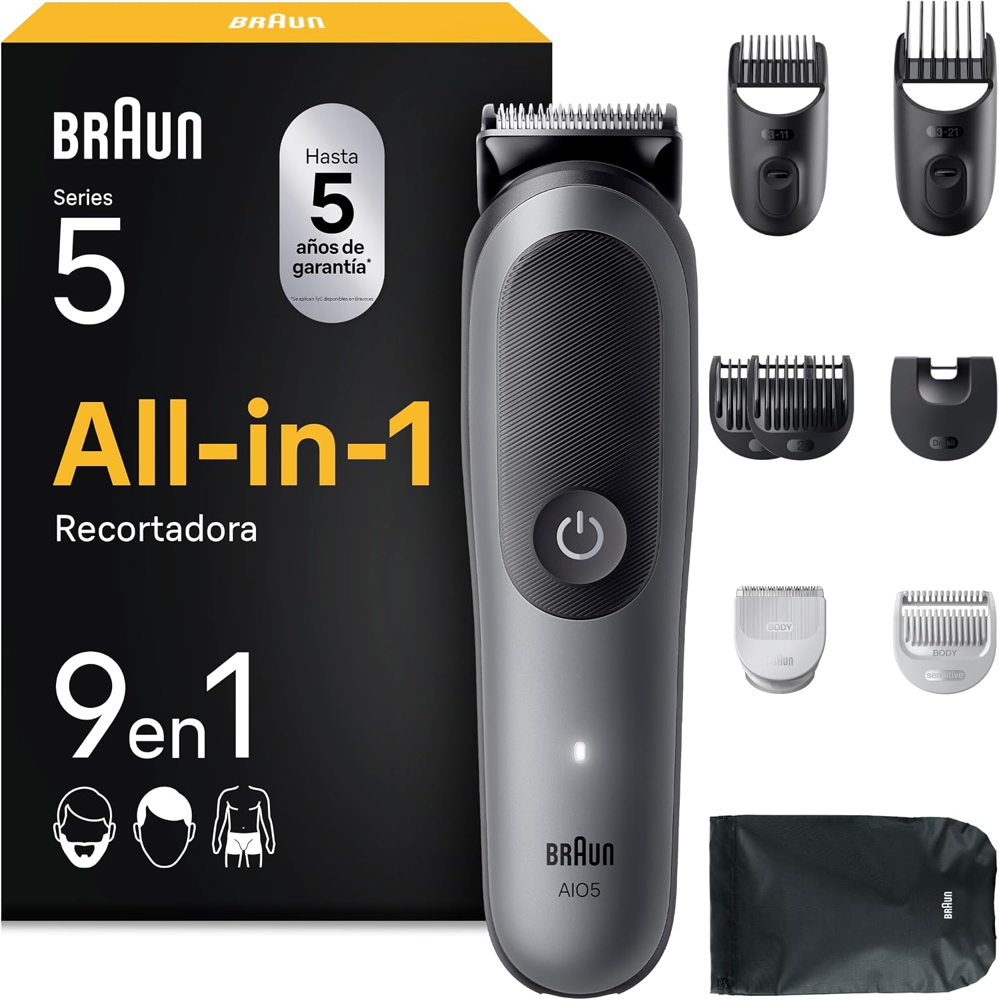

Braun Series 5 AIO5545
Cobre barba, cabelo e corpo com os acessórios incluídos
Indicado para quem quer aparar, desenhar linhas e fazer manutenção de rosto e corpo com uma ferramenta só. Faz sentido para quem alterna entre barba curta, contornos e acabamento rápido no corpo sem montar uma rotina cheia de acessórios.

Recomendamos o Philips OneBlade Pro 360 porque é uma das soluções mais práticas para manutenção versátil. Aparar, contornar e fazer retoques rápidos fica simples, com pente de 20 comprimentos e kit corporal incluído.
Indicado para quem quer aparar, desenhar linhas e fazer manutenção de rosto e corpo com uma ferramenta só.
Faz sentido para quem alterna entre barba curta, contornos e acabamento rápido no corpo sem montar uma rotina cheia de acessórios.
Confirma disponibilidade e avança para a compra com entrega rápida e pagamento seguro na plataforma.